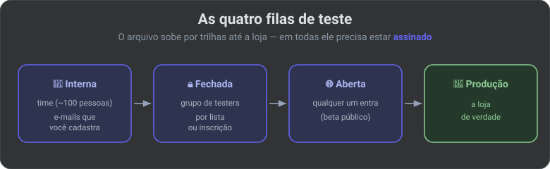
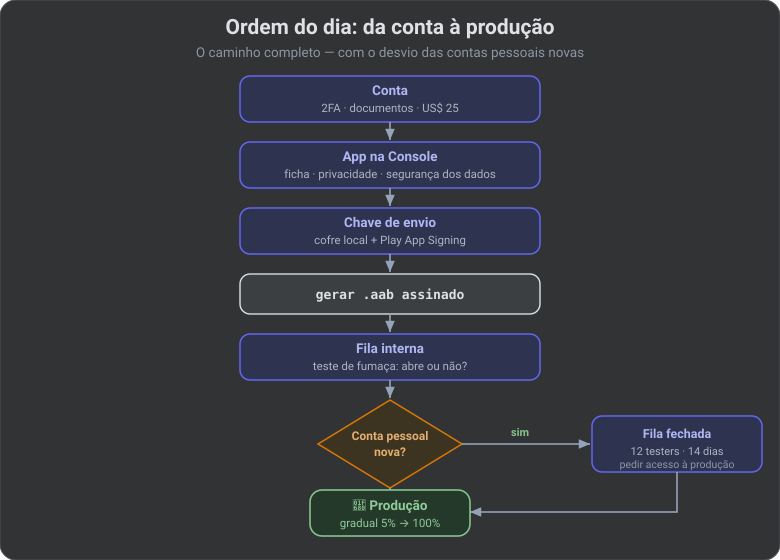

Passo a passo para quem nunca publicou. Sem jargão solto: quando aparecer um termo técnico, a frase seguinte diz o que isso é na prática.
A Google muda regra. Na hora de pagar e de pedir para ir à loja de verdade, confira a Central de Ajuda.
| Termo | Em português |
|---|---|
| Play Console | O site do Google onde você cadastra a conta, manda o app e vê se foi aprovado. Não é a Play Store (essa é a loja que o usuário abre no celular). |
| Build | O arquivo pronto do app, gerado no computador. Tipo “empacotar o produto”. |
| APK | O arquivo que o celular instala. Extensão .apk. É o “executável” do Android. |
| AAB (Android App Bundle) | O arquivo que você manda para a Google. Extensão .aab. O celular não instala isso. A Google desmonta e manda um APK sob medida para cada aparelho. |
| Assinar / chave / keystore | Um carimbo digital. Sem ele o Android não instala. O keystore (arquivo .jks) é o cofre com esse carimbo. Sem backup do cofre, você pode perder o direito de atualizar o app. |
| Trilha (track) | Fila de distribuição: só testers, ou o mundo todo. |
| Produção | A loja de verdade: qualquer um pesquisa e instala. |
| Review | Um humano/sistema da Google lê o app e a ficha antes de publicar. Pode recusar. |
| versionCode | Número interno que só sobe: 1, 2, 3… A Google usa isso para saber o que é “versão nova”. |
| versionName | O texto que o usuário vê: 1.0.0. |
| applicationId | RG do app na loja (com.suaempresa.app). Mudou = a Google acha que é outro aplicativo. |
Você precisa:
Dois tipos de conta. Você escolhe na hora do cadastro. País e tipo não mudam depois — teria que criar outra conta e pagar de novo.
| Conta pessoal | Conta de organização (empresa) | |
|---|---|---|
| Quem | Você, com CPF | Empresa, com CNPJ |
| Extra | — | Número D-U-N-S: um ID mundial da empresa (9 dígitos, cadastrado na Dun & Bradstreet). Sem isso a conta PJ não fecha. |
| Ir para a loja de verdade | Se a conta foi criada depois de 13/11/2023: primeiro um teste fechado com 12 pessoas por 14 dias seguidos, só então pede autorização | Em geral não tem essa trava |
| Celular | Instalar o app Play Console no Android para provar que você tem um aparelho | — |
Empresa: use e-mail do domínio da empresa (@suaempresa.com), site e telefone comercial. Quem cria a conta tem que ser quem aparece como responsável no Cartão CNPJ / contrato social.
O Google cruza seus papéis com o perfil de pagamentos (cadastro de cobrança da conta Google). Nome no RG diferente do nome no cartão = recusa. Os US$ 25 não voltam.
Pessoa física (Brasil)
Empresa
| O quê | Quanto |
|---|---|
| Abrir a conta na Play Console | US$ 25, uma vez. Não tem mensalidade. Não tem reembolso. |
| App da Apple (só para comparar) | US$ 99 todo ano |
| App grátis na Play | Só esses US$ 25 |
| App pago, compra dentro do app, ou assinatura | A Google fica com uma fatia de cada venda. Número clássico: 15% até cerca de US$ 1 milhão por ano, 30% acima disso. Em 2026 alguns países mudaram o cálculo — se for cobrar, olhe a tabela dentro da Console no seu país. |
| Imposto no Brasil | Problema seu (MEI, CNPJ, IOF no cartão dos US$ 25). A Play não declara imposto por você. |
Os US$ 25 são só a taxa de cadastro. Não incluem a fatia das vendas.
Antes de o mundo baixar, você manda o arquivo do app para uma trilha (fila). Em todas elas o arquivo tem que estar assinado (com o carimbo digital).

| Fila | Para quê | Quem consegue instalar |
|---|---|---|
| Interna | Teste rápido com o time (até ~100 pessoas) | Só e-mails que você cadastra |
| Fechada | Teste controlado. Na conta pessoal nova, é ela que libera a loja de verdade | Pessoas que abriram o link oficial da Play, aceitaram e instalaram pela loja. Mandar o APK no WhatsApp não conta. |
| Aberta | Beta público: quem quiser se inscreve | Qualquer um (às vezes com limite de vagas) |
| Produção | Loja de verdade | Qualquer um que buscar na Play Store |
Se sua conta pessoal é nova: precisa de 12 testadores inscritos (opt-in = clicaram no link e aceitaram) durante os últimos 14 dias sem faltar um. Se um sair e cair para 11, os 14 dias recomeçam. Convide 15 a 20. Depois aparece o botão para pedir acesso à produção (Apply for production): um formulário (como achou os testers, o que eles testaram, o que você corrigiu). A Google lê isso na mão.
A fila interna não substitui a fechada nessa regra.
Sem isso a Google nem começa a analisar o app.
https://…) dizendo que dados você coleta. Obrigatória se o app pega dado do usuárioMentir no Data safety = recusa agora ou remoção depois. Não é texto de marketing.
O celular só instala app carimbado. Desde agosto de 2021, app novo na Play usa o Play App Signing: a Google guarda o carimbo “oficial” do app.
Imagine dois selos:
| Selo | Quem guarda | Para quê |
|---|---|---|
| Chave de envio (upload key) | Você, num arquivo keystore (.jks). Faça backup. |
Carimba o AAB que você sobe no site. Perdeu? dá para pedir à Google uma chave de envio nova. |
| Chave do app (app signing key) | Google (o recomendado é deixar ela criar). | Carimba o APK que o usuário baixa. Perdeu a conta Google e não tem cópia dessa chave = não consegue mais atualizar o app. Usuário antigo fica preso na versão velha. |
Você não envia o APK final da loja. Envia o AAB. A Google fatiar: um APK para celular com chip Snapdragon, outro tamanho de tela, outro idioma — cada um menor.
O arquivo do cofre (keystore) não vai para o GitHub. Senha em arquivo local que o Git ignora, ou no computador/CI, nunca no código público.
A chave de envio precisa valer depois de 22/10/2033 (regra da Play).
| APK | AAB | |
|---|---|---|
| Analogia | O bolo já assado, pronto para comer | A receita + os ingredientes; a padaria (Google) assa o bolo do tamanho certo para cada cliente |
| O celular instala? | Sim | Não |
| Manda para a Play (app novo)? | Não (desde 2021) | Sim — é o único formato |
| Passar no cabo USB / WhatsApp para um amigo | Sim | Não. Precisa converter (ferramenta bundletool) se quiser um APK no PC |
| Tamanho do download | Costuma ser um arquivo grande (vale para todos os tipos de celular) | A Play manda só o que aquele aparelho precisa → download menor |
No computador (na pasta do projeto):
./gradlew :app:bundleRelease # gera o .aab da LOJA
./gradlew :app:assembleRelease # gera o .apk para instalar na mão — não é o arquivo da Play
./gradlew é o comando que empacota o app (o “Gradle” é a ferramenta de build). Se o projeto tem “sabores” (ex.: versão prod + acabamento release), o nome do comando junta os dois: ./gradlew :app:bundleProdRelease.
A versão de loja se chama release (lançamento). A de desenvolvimento se chama debug (com logs, ferramentas de caça-bug). Não suba o debug.
O que ligar na versão de loja:
isMinifyEnabled = true + R8): apaga código morto e embaralha nomes. Sem isso o arquivo fica enorme e mais fácil de copiar. Só escrever release no nome não liga isso sozinhoisShrinkResources = true)1.0.0)Antes de mandar: instale uma vez (pela fila interna da Play, ou gerando um APK de teste). Se abrir e crashar, a análise da Google é tempo jogado fora.
.aabSe recusarem: leia o e-mail. Motivos comuns: ficha de dados mentindo, permissão no app que você não usa, política da loja, conta pessoal sem os 12 testers. Corrija, aumente o versionCode, envie de novo.

.aab assinado e mandar na fila interna (teste de fumaça: abre ou não?)AAB para a Google. APK para o cabo USB. Cofre da chave no HD de backup, nunca no GitHub.